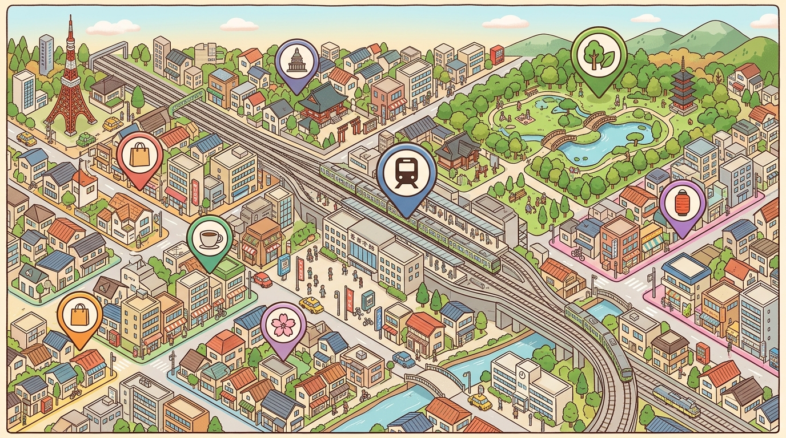

渋谷区
恵比寿・代官山・松濤など、都心の中でも住環境にこだわる層に人気。
- 平均売買単価：高
- 賃貸需要：◎
- 主力：マンション・タワー
東京都心6エリアに根ざし、地域の相場・学区・生活環境まで熟知したスタッフがご案内します。

恵比寿・代官山・松濤など、都心の中でも住環境にこだわる層に人気。
中目黒・自由が丘エリア。カフェ・商業施設が充実した閑静な住宅地。
麻布・白金・赤坂。大使館街の落ち着きと都心アクセスの両立。
大崎・五反田・武蔵小山。再開発エリアと下町の魅力が共存。
用賀・二子玉川・三軒茶屋。子育て世帯に人気の緑豊かなエリア。
月島・日本橋・銀座。ビジネスパーソン・DINKS 向けの都市型住まい。